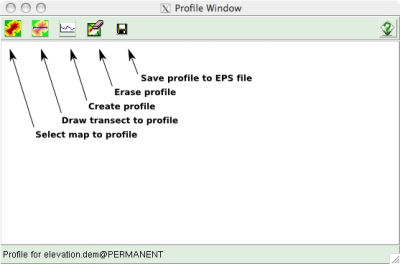
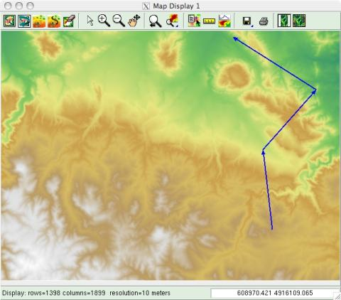
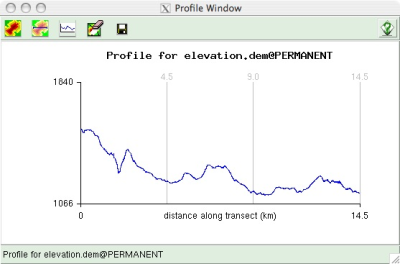

PROFILE TOOL (gis.m)
The Profile Tool will draw a 2-dimensional profile of the surface of
any raster map. The profile will be calculated along a transect line, drawn
with a mouse on a map display. The transect line can be a
simple line (i.e., with only a beginning and ending node) or a complex
polyline (i.e., with multiple segments, delineated by multiple nodes).
Using the Profile Tool
The Profile Tool is started by clicking on the profile button
( ) on the toolbar of
a map display window.
) on the toolbar of
a map display window.


- Click the map button on the Profile Tool toolbar to select a raster map
to profile. The map to profile can be different from the one displayed.
-
Click the transect button to begin drawing a transect to profile with a mouse
the current map display (i.e., the map display from which you launched the
Profile Tool). Draw by holding down the left button to make a
"rubber-band" line for each segment of the transect. A transect can
have a single, straight segment or multiple segment. There is no need
to "end" the drawing. The Profile Tool will profile the drawn transect
at any time. You can also extend an existing transect and
draw a profile of the new transect.
- Click the profile button to create the profile.

The profile extends from left to right in the profile display. The
horizontal (x-axis) scale represents the total distance along the
transect to be profiled. Vertical lines mark each node on a
multi-segment transect and show the total distance along the transect
to the node. The vertical (y-axis) scale is in units of the map that is
being profiled. All scaling and axis labels are created automatically,
and cannot be changed by the user.
• The erase button will erase the current transect and profile.
• The save button will save the profile to an Encapsulated PostScript
(.eps) file.
SEE ALSO
gis.m manual
gis.m: ANIMATION TOOL
gis.m: GEORECTIFY TOOL
d.profile
d.geodesic
d.rhumbline
m.cogo
r.profile
r.transect
AUTHORS
Michael Barton, Arizona State University, Tempe, Arizona, USA
Hamish Bowman, University of Otago, Dunedin, New Zealand
Last changed: $Date$
Main index - Full index